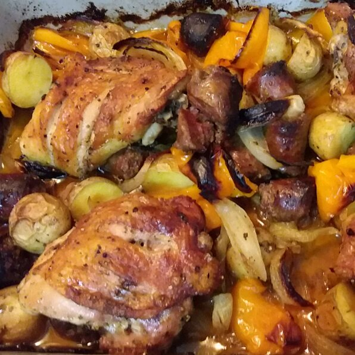

Chicken, Sausage, Peppers, and Potatoes

Description
Browned Italian sausage and chicken thighs with sweet peppers, red onions, and Yukon Gold potatoes are doused in olive oil and tossed with dried herbs before hitting a very hot oven. Chef John says, "You'll need a large, heavy-duty roasting pan
(or a couple of smaller ones) and a very hot oven for this delicious dish. The long oven time makes everything beautifully caramelized and the chicken fork tender." Meanwhile, ccok4fun raves about it: "This recipe is amazing! I highly recommend
watching the video. Next time I'll use more veggies & potatoes because they are just delicious!"
Ingredients
- 4 large links hot Italian sausage
- 2 tablespoons olive oil, divided
- 6 bone-in, skin on chicken thighs
- ½ pound assorted sweet peppers, seeded
- 1 small red onion, sliced
- ½ yellow onion, sliced
- 4 large Yukon Gold potatoes, quartered
- 2 teaspoons dried Italian herbs
- 2 teaspoons kosher salt, plus more as needed
- Freshly ground black pepper to taste
- 1 tablespoon Chopped fresh Italian parsley
Steps
- Preheat oven to 450 degrees F (230 degrees C).
- Heat olive oil in a skillet over medium heat. Cook sausage links until browned and oil begins to render, about 3 minutes per side. While sausages are cooking, pierce them lightly here and there with the tip of a sharp
knife so some fats and
juices are released. Remove from heat and let cool slightly.
- When sausages are cool enough to handle, cut them into serving pieces, about 2-inch slices. Transfer back to pan along with any accumulated juices from the cutting board.
- Cut two slashes down to the bone on the skin side of each chicken thigh.
- Depending on the size of the peppers, halve or quarter them and place in a large mixing bowl. Add the sliced red and yellow onions and potato chunks. Add chicken thighs and sausage pieces with pan juices.
- Season with kosher salt, black pepper, and Italian herbs. Drizzle with a tablespoon of olive oil.
- Mix with your hands until all ingredients are coated in oil, 3 or 4 minutes. Transfer to large, heavy-duty roasting pan. Evenly space the chicken thighs skin side up. Position potatoes near the top.
- Place in preheated oven until chicken is cooked through and everything is caramelized, about 1 hour. An instant-read thermometer inserted near the bone should read 165 degrees F (74 degrees C). Sprinkle with chopped
fresh Italian parsley, if
desired.